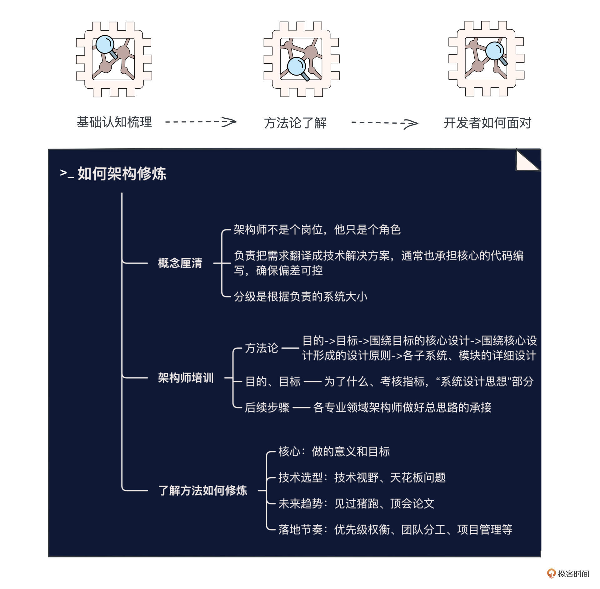

- 01 小厂项目：做程序员不难，难的是做职业程序员.md.html
- 02 小厂创业：做出一个产品，卖给所有人.md.html
- 03 淘宝HSF：能让淘宝出重大故障的就那批人.md.html
- 04 淘宝消防队：真正最优秀的程序员不应该是英雄.md.html
- 05 HBase_T4：Leader最重要的，说白了是要赌未来.md.html
- 06 异地多活：技术圈子的人，见过猪跑很重要.md.html
- 07 运维团队：我能干，只是我不想干而已.md.html
- 08 基础团队：研发效能部门，解决不了研发效能问题.md.html
- 09 统一调度：只是问题非常多而已，摔出来就行了.md.html
- 10 出走大厂：离职？还是不离职？这是一个问题.md.html
- 11 CEO心得：大厂出来创业，最大问题是对钱没概念.md.html
- 团队：在人身上，你到底愿意花多大精力？.md.html
- 开篇词 这一次，我们来采访毕玄.md.html
- 成事：技术人最大的问题就是情怀化.md.html
- 文化：你所在的团队，有多少人敢讲真话？.md.html
- 方向：技术演进，到底该怎么思考未来？.md.html
- 架构：架构师只是个角色，不是个岗位.md.html
- 番外：一位险些没上得了大学的青年，如何开启计算机征程.md.html
- 捐赠
架构：架构师只是个角色，不是个岗位
你好，我是叶芊。- - 今天我们对谈的主题是——架构师。知道你是抱着收获一二三四条方法论的想法来的，没错，今天一定会有，而且非常具体，甚至会具体到你在系统设计文档里的“系统设计思想”这个小章节应该写什么。是不是非常期待？- - 不过，在讲具体的方法论之前，有几个至关重要的概念我们先要理解清楚，会对你的职业规划有巨大帮助。不然，很多人连架构师具体是干嘛的，能做到什么、不能做到什么都不清楚，就冲着那个概念高喊“我要当架构师！”，岂不是事倍功半，甚至还有可能南辕北辙了。- - 好，话不多说，我们马上进入对谈。
- 极客时间：关于架构师，有一些概念大家觉得非常基础，但又好像似懂非懂，想看看你是怎么理解的，比如说到底什么是架构师？
毕玄：其实就是个Title。很多公司不会有明确的架构师岗位，就是做这个事情的时候需要一个架构师，所以你兼任或者指定了一个人而已，不会说这个人他就是个架构师，很少有公司这样，因为这确实会有点问题。
极客时间：那架构师部门是？
毕玄：很少有公司会有架构师部门。就算有都是很小的，虚拟的也可以。是这样，多数不是说这个人的角色就是个架构师，因为这里有个最大的问题就是架构师到底干啥。我们一直都认为架构师他不是个岗位，他只是个角色。
大家的岗位全部是研发工程师，只是说在这个项目或者系统里，我需要有一个人承担架构师的职责，承担这个角色来负责设计整个系统。
极客时间：什么叫设计系统？
毕玄：现在前面有一堆需求，不管是来自业务方还是来自技术方本身，技术方本身就是做基础技术的那群人。
需求有了以后，这个需求要被翻译成一个技术的解决方案，这就是架构师要干的，通常这个人也会承担比较核心的代码编写，其他人会遵照这个设计来完成整体落地，就这个活儿。
极客时间：但是有些好像就负责写方案？
毕玄：有些可能是外部来的，有些是做业务架构的，比如业务方有大需求，这个时候有人要提解决思路，那可能是另外一回事，他可能是不负责落地的，翻译完就随便做做。但这种是很容易虚的，比如你做架构的时候画框说要这么做，最后研发具体怎么做你根本就不知道，可能跟你想的千差万别，因为研发有自己的想法，这很正常。
挺乱的，架构师也搞不清楚到底什么是架构师，反正我们看过很多，最后还是觉得架构师不大适合实体化。
极客时间：在阿里，架构师会分级别吗？比如初级、中级、高级这种？
毕玄：这对我们来讲是负责的系统大小，但这也很主观，可大可小，比如一个小的系统里包括一些模块，更大一点的可能涉及两三个系统，更大涉及上百个，就需要很多的大架构师。
像大架构师会是一个团队，因为会跨很多专业，总架构师一个人不可能全懂，所以他只是根据整个全貌，划定一个指导思想的框架，判断出负责每个系统的架构师在设计的时候要解决好的几个问题，剩下就是你自己的事了，解的思路有时候会给出来，但具体你要跟你自己的想法结合，做好最后的落地工作。
极客时间：总架构师感觉很像导演，像张艺谋导了冬奥会。
毕玄：你可以认为他（张）就是个架构师，他讲思路，下面人支持，至于怎么确保下面执行的过程不要跟他的想法有太大的偏差，他不是靠系统去控制的，他是靠人在打。
但技术上的架构师是我必须要设立一些指标，可以确保你们上线了我也能看，这就是个很好的架构师，因为多数架构师是画完框就不管了，最后谁都不知道程序员自由发挥成啥样了。
极客时间：现在有很多架构师的课程，教怎么成长为架构师。
毕玄：这课简直太难讲了。外面架构师的课程讲啥的，我都很好奇，以前培训的人问要不要采购，我就说你们不要听他们瞎扯。这个话题我们都想了很久。
极客时间：但大家一般觉得架构师是从初期培养的，比如说最开始先了解架构工具，再讲架构理论等等。
毕玄：这我们从来没有，我之前都是用PPT给大家讲的，因为架构师，我觉得工具一点都不重要。架构师最重要的传达清楚你的想法就可以了，至于你用什么工具一点都不重要。
架构理论，他学完了会发现一点用都没有。像设计原则、设计模式这些东西也不是完全没用，还是有点用，但这就跟数学公式一样，你知道了这些公式，就是学了一个天花板，只是那可能是一个很小的点。
极客时间：那你觉得架构师是可以培养的吗？
毕玄：我以前觉得很难被培养，因为我觉得方法论这个东西没什么用，但后来我觉得方法论还是有点用的，所以我在离开阿里前特意搞了一个架构师培训的班。
极客时间：你讲的是什么？对参加的人有什么要求吗？
毕玄：级别我们其实不区别，班里都是承担过架构师角色的人，大小都有，因为负责系统的大小是知识面的问题。但不管你是哪一级，负责多大系统，我看过我们以前所有系统设计方法都是一样的，大的无非就更复杂一点，可能是分下去有更多人组成。
所以做架构，首先做事的大概思路是可以抽象出来的，比如我的方法第一步是这个，第二步、第三步是什么；另外更重要的是我可以告诉你，我在每一步犯过的错是什么。
因为光讲方法论，最大的问题是讲完之后没有一个人能听懂，他也不会落到自己的实践上，如果你给他讲几个血淋淋的案例，等未来他真正干这个活儿的时候，他也许忘记了方法论，但他想起了那个教训，可能偏差也不大，这就是我们觉得架构师能培养的地方。但其它的，我们觉得确实培养不了，只能实战。
极客时间：讲案例倒很像分享，不太像培训了。
毕玄：因为我们觉得想成为更大的架构师，真的不是靠培训，是知识面问题。
像蚂蚁做的确实好，他们会划几个等级，上面有更大的域架构师。比如说你这个领域是交易，交易里面还有订单、优惠等等，你以前可能只负责优惠这个小系统，只能讲清楚这一块儿，如果你要负责整个，必须要清楚全部的问题。这根本不是培训的活，因为每家公司业务都不一样，而且外面培训很难帮他，只能靠他自己。
极客时间：这是业务架构师，那技术侧的架构呢，也是一样方法吗？
毕玄：对，技术架构师也一样，都是全貌问题，越大的系统，架构师就越难有全貌。因为没有一个人的角色是我来专门看全貌的，只有你干的时候才承受，你被任命了。
他们的区别只是业务架构师的需求来源于业务，技术架构师更纯粹一点，最大的挑战是想好你要解的问题是什么。因为基础技术是需要自己想的，要做什么东西，自己创造需求，业务说实话不需要你想。所以事实上做事的方法都是同一个。
极客时间：所以这个抽象出来的方法论是什么，是你之前在公众号上写的架构师套路？
毕玄：对。
自己做系统设计的套路：系统设计的目的->系统设计的目标->围绕目标的核心设计->围绕核心设计形成的设计原则->各子系统、模块的详细设计。
极客时间：这个做架构的套路，你一般是怎么开展的？
毕玄：首先必须有个最大的架构师，他是划定框的，决定了这次的协作关系。这个架构师，最重要的是定义目的，做一套架构之前他要告诉所有人，这次为什么要做架构级的改造？
因为架构级改造其实不多，这是超级大的动作，所以为什么架构师不大需要，因为老做这么大的，肯定是出了挺严重的问题，像阿里发生过大的架构其实就这四轮，哪有什么那么多架构的事情。正常情况下，在我原来的框里添添改改就行了。
极客时间：方法论有了，我们也用你开培训班的思路，举具体的案例来理解一下其中的每一个环节，第一步是目的，比如说集团上云当时的目的是什么？
毕玄：第一个目的是以后采购的所有机器100%必须是阿里云的，不允许自己采购了，所以我们只看预算，如果大家全部是从阿里云走的，就说明成功了；第二个像PaaS这层我们定义的目的，凡是阿里云有的产品全部不允许自研了，而且要用标准的云产品。
然后下面的架构师会来分解。比如PaaS因为要全部切换成云资源，所有的系统架构师来看他们的系统要搬上去到底会面临什么问题，这些问题提出来会由阿里云负责计算资源的架构师来看应该怎么解决，这就是他们应该干的。
所以越大的架构师，其实越是个框架，是个方向性指导，下面的人都在这个框里。但是因为你定义了一个目的，最后你就可以确保这么多人协作不会走偏。
极客时间：你做统一调度也是类似，第一步提一个大的方向？
毕玄：对，像统一调度涉及基础设施、网络、大数据各种各样的团队，那我就必须说清楚我的总体思路是什么，然后你这部分最重要的是要做好什么，就可以了。你们怎么做起来的跟我没关系，你也不用告诉我，因为我也不懂。
大架构师就是这样的，其实是我给一帮人提了一堆的问题，然后你们去做掉。最难的是提问题，而不是解。
极客时间：为什么方法论的第一步和第二步会有“目的”“目标”的区别？
毕玄：目的是我做这件事情是为了什么，但是目标是我怎么考核你做到，其实是个指标。
因为通常来讲，架构设计最大的问题都是你最后做完了，发现跟当初设计是有偏差的。这很正常，因为程序员会自己发挥，像画建筑设计图一样，你一开始画成这样，最后盖成什么样谁都不知道，搞不好天差地别。所以目的、目标就指标，是做系统架构师在前面要做好的。
极客时间：所以目标这一步，比如说会给一个数字？
毕玄：对，比如说异地多活，核心目的就是把切流要封闭在一个单元里，所以我们一定会考核跨单元的交互，这是会在系统指标里定义清楚的，以后系统上线了，只用看这个就能知道有没有达到我们的设计目标，确保偏差不会太大。
极客时间：会不会有些东西用数据衡量不了？
毕玄：那不会，肯定可以的，如果不能衡量，应该是这个架构师没有想得很清楚。
像我刚讲的目的、目标，其实是应该写在系统设计文档里的“系统设计思想”部分的东西。以前很多系统设计文档里都有设计思想这一小章节，但很多人都瞎写。
极客时间：具体要写什么呢？怎么判断有没有在瞎写？
毕玄：有的人不管做什么系统设计，放进去的设计思想都一模一样，这就是瞎写。设计思想是你针对这一次改造，你觉得所有人需要遵循的最基本的原则是什么。
就像异地多活，我们给的第一设计思想指导就是数据错乱保护，你要确保你的数据不会出现错乱，在下面写各个系统实现的时候，我会告诉你大概的解决思路是什么，在你的系统里一定要把这些写上，其它都是次要的。比如要做分流，我告诉你分流的思路是什么，剩下的就是你正常解决问题而已，随便你发挥。
所以你写的其实就是解决问题的一个大思路，也不用写太细，没有多少人真的会那么细地去看那个文档，你要看你写的这些条，在下面架构师的文档里会不会承接好，会的话说明这真的是设计思想。
极客时间：目的和目标后面就是具体的设计方案了，你们在实际做项目的时候会讨论吗？
毕玄：这个我们没有，我们几乎不做架构理论，最多是在晋升面试的时候留用。
极客时间：不会找其他人看一下我的方案什么的？
毕玄：不会，你想架构师是干啥的？就是前面有个问题，要想一个解决方法而已，这是工程，多数工程师是非常擅长的，尤其是写代码优秀的工程师。
这个能力就跟数学解题一样，只是你解的方法可能有问题而已，但你不会这么认为，技术的人都这样，都觉得我的方法当然没问题。前面大家空对空谈，有可能最终落地真的被你说中了哪些地方确实有问题，然后返工，这很正常，因为他只有到那个阶段才能明白，原来我确实设计的有点问题。
极客时间：所以整体看架构设计，对架构师来说哪个环节要求最高？前面写设计思想？
毕玄：对，因为很多人根本没有想清楚。大家对系统架构的认知也是这样，前面一页需求，后面一页就是框，觉得架构师这活也挺容易干的，不就是画框嘛。
但最关键的是你的框为什么要画成这样？这就是你的选择，你的观点，说白了前面有个问题，你准备怎么解决，你要把这个解决思路告诉给所有人。
但大家都知道解决思路有很多种，那你为什么选择这种？你的思路是不是最好的？如果不是最好的，你要知道最好是什么。很多架构师是讲不出这个逻辑的。他为什么要把框画成那样，是因为别人把框画成了那样，他只是套用了一下而已。这就不叫做架构设计，这只是复制一下。所以架构师通常是会讲的人，因为架构师是需要传达的。
极客时间：而且前面这一步感觉是不好通过培训来学习的？
毕玄：对，我们只能讲案例，因为选择涉及很多方面，像技术选型需要你“见过猪跑”，还有工程落地问题，你要想到底哪几个地方是一定要解决的，哪些在当前阶段是不重要的，这就是架构师的取舍。你不能说我什么都要做好，那不可能。
像我们做统一调度也是，当时决定做两个调度器，在线的Sigma，离线的Fuxi，然后中间有个所谓的零层来做两层的交互，后来应该是19年合在一起了就是ASI。最早我们也有纠结，要不要做一个统一调度去同时支持在线和离线。
很多人从技术梦想上讲应该先统一，但我坚决不同意，我就跟团队讲这不光是技术问题，还有工程问题。如果统一成一套，光做这套调度器可能就3年了，这3年里我们不会看到任何成果，但我要的是3年内看到类似Borg的混部带来的整体收益，有了收益，以后自然有机会去实现技术梦想，如果没有收益，可能公司隔2年觉得这项目不值得干，直接就不让我们干了，这很正常。
而且关键是这个选择不是我们做到业务效果的障碍，不做统一，也能做到这个效果，统一纯属只是好看一点而已，技术上我也认，我们的方案一看就很丑陋很妥协，但从工程落地上来讲，这就是最高效的方案，因为落地才是最重要的。
极客时间：你觉得落地最重要，但在技术先进度、方案效果和工程落地等等方面上，很多人对优先级的看法可能不太一样？
毕玄：为什么很多技术很好的人在一家公司做不成事情？最大的问题是他不能接受妥协。
他觉得必须我做成这样，才可以。但很多东西都不是这样的，你慢慢其实可以做到那样子，但你要能接受前面恶心一点的过程，反正也是为了最终能做到，要慢慢来，不要太着急。
当时我们做统一调度被很多人狂喷，说你们简直了。他们就觉得你们这伙人是不是觉得太难了想绕路，就被他们鄙视，但这些我都不在乎。
因为我当然也知道有另外一套更好看的，但关键是要判断工程节奏，以及判断如果用这种丑陋的方案是不是做不到业务效果，如果做不到，当然就是另外一个事，关键它不是阻碍的点，对不对？那干嘛挑战难度。反正我觉得挺好的，能做成就行了，你管我什么方案，而且这个方案我会逐步变完美的。
极客时间：总结一下，你觉得一名优秀的架构师应该具备哪些能力？
毕玄：对架构师来讲，第一要非常清楚知道你做的这个事情的意义，这个还是核心问题，在这个意义上你再去做技术方案，思考技术上怎么去解决掉这个问题，那你肯定会有很多种方案，这就是权衡要考虑很多方面。
像早期的HSF、T4我们技术选型都出了很大的问题，这其实是架构师最重要的责任，如果你的解决方法有问题，那后面就彻底完蛋了。如果你做比较顶级的方案，还有之前讲的天花板问题。
另外就是你对未来发展趋势的看法，比如说HSF我们认为就是为Java场景设计的，但没有想到一家公司一定会发展成多元化，一开始没留口子，后面根本没有机会，所以后来多元进来就不知道怎么搞了，这是设计问题。
有时候架构师还会面临团队分工问题，比如说你需要的技术，有三个团队提供，你选谁？这也是架构师要解决的，我们会看平时哪些人做整个系统更有想法，而不是只是我那部分代码怎么写，也会从团队定位和长远发展看，做这个东西对哪个团队来讲是他的长期主业。但这是非常复杂的话题，你要有自己的观点，肯定会得罪一些人，这很正常。
所以架构师是有很大的挑战的，有些时候要面临一些比较复杂的问题和方案。
极客时间：但这几点也都很难培养，只能以战养兵。
毕玄：纯培养我觉得太难了，只能尽量告诉他们在做每一步的时候应该考虑好什么，比如技术选型，我们会大概告诉你技术选型的思路是什么，要注意哪些点。另外也会重点强调你做一个架构设计，千万别随便写设计思想。
极客时间：对于职业成长路径来说，现在大家好像普遍觉得不想做架构师的程序员不是个好程序员。
毕玄：因为看起来好像就是架构师负责了整个系统。
极客时间：那程序员的最终归宿是架构师是真的吗？
毕玄：不会，这成长路径有问题。程序员成长路径的一条就是继续做程序员，这还是得一直做下去的，另外确实有些程序员成长为了架构师，但其实他就是一个兼职，研发工程师兼架构师角色。
如果谁说我就只设计系统，这人很多时候没活干的，因为系统不需要老设计。万一你真的设了这个岗位，那完蛋了，因为这个人就会老想，会凭空创造出来一些需求，这就尴尬了。
因为架构师是设计系统结构的人，不是设计细节的人，细节才需要经常变的，所以之前专职架构师部门最后会变成一个很虚的部门，因为你又不实干，你讲了很多，但别人研发觉得你又不懂，他还是自己干一套，跟你的设计方案一毛钱关系都没有。

极客时间：对于想走架构师这条职业路径的同学，一般架构师是怎么选出来的？
毕玄：一般就是研发里写代码写得比较好就去做，一个项目比如说业务方有需求了，那你就牵头去处理这个需求去做规划，所以平时根本不存在这个人，只有这个项目出现的时候才会突然说任命了谁去负责横向的架构。这当然是基于大家日常对他的认可。
极客时间：所以即使以架构师为目标，大家也还是要从程序员正常往上走？
毕玄：对，不会因为你是架构师就给你定什么级，当然架构师肯定会比程序员更有优势，这个我们也认。
因为做过架构师的人说明你可以承担更大的责任，除非是做专业技术的像虚拟化、内核，对业务团队来讲，为什么那么多做业务研发的程序员想做架构师？说白了他只是想负起一个更大责任而已。
多数公司的发展路径是有些程序员他能兼任架构师，他可能就变成Leader了，可以负责这个系统了。因为架构师其实已经具备技术层面、业务层面的技能了，只是欠缺的是管理、行政什么的，他离Leader只剩一步。所以架构师，确实几乎就是Leader的前提。
极客时间：但好多人只想当架构师，不想当Leader。
毕玄：我觉得很多人想成为架构师的目标是想做Leader，而不是想做架构师。当然有些人也喜欢做架构师，就是我不想承担管理责任，但是我又想负责整个系统，这种人也有，这也没错。
但通常来讲，作为一个技术Leader，最重要的当然是技术能力，管理能力是可以培养的，所以我们不会接受说这个团队有一个管理能力很强的人，因为他技术能力差一点所以要给他配个架构师，这简直太丢人了。所以通常就是架构师做了Leader。
水友讨论区
说实话，今天聊完我对架构师有了全新的认知，之前我一直以为架构师是一个岗位，就是有个人一路打怪升级上去最终成为了一名架构师。
毕玄认为，架构师就是个角色，有一堆架构演进的需求来了，需要被翻译成一个技术的解决方案，有个人出来干这活，根据系统全貌划定一个指导思想的框，也承担了比较核心的代码编写，来保障最终的项目效果，这个人就是架构师。
如果你还想成为一名优秀的架构师，毕玄认为应该具备几大核心能力，核心是要想清楚并且讲清楚你做这次架构改造的意义，包括目的和目标，在意义上再做技术方案的思考和权衡，包括技术选型，顶级方案的天花板问题、对未来发展趋势的看法、团队分工问题等等。
你对架构师的理解是什么呢？你眼中的架构师能力模型是什么样的，对这些能力有怎样的排序呢？如果你有自己的架构方法论，也欢迎分享，期待在留言区见到你的思考。
到这里，5场专题研讨会就结束了，我们从“个人成事、方向选择、团队带领、做事文化、架构修炼”这5大方面，把毕玄分析问题的思路和做事情的方法浓缩给你，不知道你收获如何。
当然想要把方法论化为己用，你还需要丰富的案例，所以，我们接下来将坐上时光机展开一段探索之旅，看看毕玄在二十多年的技术人生中，做过怎样的选择，又经历过怎样的波折，才总结出这5大方法论。期待和你再会，下一讲见。
拓展阅读
毕玄在自己的公众号上写了一个架构师系列，详细讲了方法论中的每个步骤，你可以参考：
0. 聊聊系统设计的套路- 1. 系统设计之系统建设的目的- 2. 系统设计之系统建设的目标- 3. 系统设计之达成目标的核心问题- 4. 系统设计之解决核心问题的设计- 5. 系统设计之设计原则
另外还有几篇针对自己经历的架构反思：
© 2019 - 2023 Liangliang Lee. Powered by gin and hexo-theme-book.